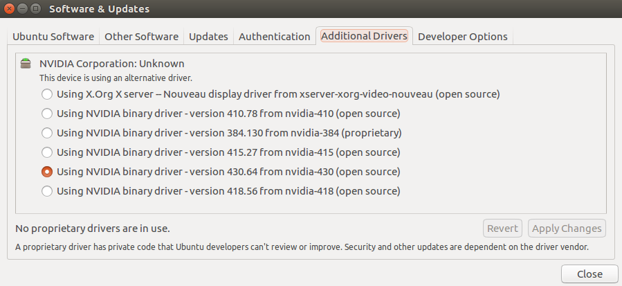
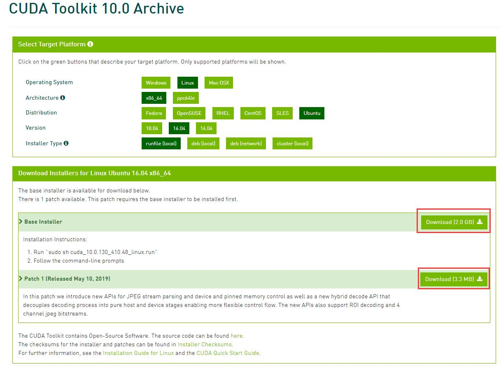
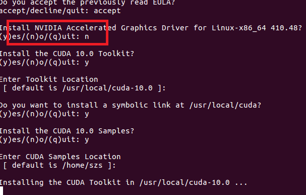

关闭自动更新并主动更新系统依赖
Ubuntu自动更新软件在后台运行的时候会导致终端中很多命令无法使用，故新系统建议关闭自动更新。设置方法为在Software & Updates中定位到Updates，将Automatically check for updates和Notify me of a new Ubuntu version设置为Never，如图所示。 
主动更新依赖命令 1
2sudo apt update
sudo apt upgrade
添加ppa源
Ubuntu 16.4官方源的驱动版本已经过时，不支持CUDA 10.0，好在NVIDIA为Ubuntu 16.04提供了ppa源，其中有支持CUDA 10.0的显卡驱动可用。命令如下： 1
2sudo add-apt-repository ppa:graphics-drivers/ppa
sudo apt update
安装显卡驱动
在Software & Updates中定位到Additional Drivers，选择最新版本的NVIDIA binary driver(至少不能低于CUDA文件包含的版本号，后文会有)，然后Apply Changes。等待安装完成之后reboot即可，如图所示。 
安装CUDA
下载安装文件
打开CUDA 10.0下载页面：https://developer.nvidia.com/cuda-10.0-download-archive。按下图所示选择对应系统，下载给出的两个run文件。 
安装
运行如下命令即可安装CUDA。注意不要安装显卡驱动，即当系统询问Install NVIDIA Accelerated Graphics Driver for Linux?的时候输入no。这里选择仅仅安装CUDA，只要系统中的驱动版本不低于CUDA要求的最低版本（CUDA文件名已包含最低要求版本），CUDA即可调用系统中的显卡驱动。这样做可避免不必要的运行报错。虽然可以通过init 3之后安装，但是重启之后却无法登入系统。这可能是CUDA自带的驱动没有针对相应系统做优化导致的，而ppa源中的驱动都是针对相应系统优化了的。 1
2
3
4
5cd
cd Downloads
chmod +x *.run
sudo ./cuda_10.0.130_410.48_linux.run
sudo ./cuda_10.0.130.1_linux.run
运行上述命令，提示输入的时候输入如下图所示。 
安装完成之后还要修改PATH，使得CUDA可以被调用。在~/.bashrc文件末尾加入如下两行代码并运行source ~/.bashrc即可。 1
2export PATH=/usr/local/cuda-8.0/bin:$PATH
export LD_LIBRARY_PATH=/usr/local/cuda-8.0/lib64
验证
运行如下命令，最后一行输出是Result = PASS即表示CUDA安装成功。 1
2
3cd /usr/local/cuda-10.0/samples/1_Utilities/deviceQuery
sudo make
./deviceQuery
安装cuDNN
下载安装文件
直接去官网下载对应系统的对应deb包安装即可: cudnn-archive。 
安装
进入Downloads文件夹，直接双击下载好的三个deb文件即可安装。
验证
运行如下命令，最后一行输出是Test passed!即表示cuDNN安装成功。 1
2
3
4cp -r /usr/src/cudnn_samples_v7/ $HOME
cd $HOME/cudnn_samples_v7/mnistCUDNN
make clean && make
./mnistCUDNN